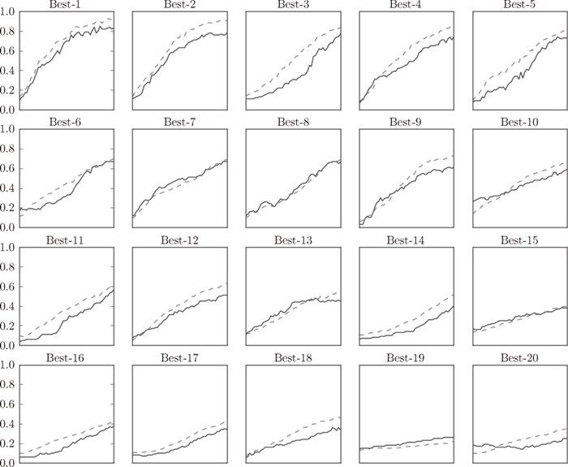

训练数据用于参数（权重和偏置）的学习，验证数据用于超参数的性能评估。为了确认泛化能力，要在最后使用（比较理想的是只用一次）测试数据。
训练数据用于参数（权重和偏置）的学习，验证数据用于超参数的性能评估。为了确认泛化能力，要在最后使用（比较理想的是只用一次）测试数据。
神经网络中，除了权重和偏置等参数，超参数（hyper-parameter）也经常出现。这里所说的超参数是指，比如各层的神经元数量、batch 大小、参数更新时的学习率或权值衰减等。如果这些超参数没有设置合适的值，模型的性能就会很差。虽然超参数的取值非常重要，但是在决定超参数的过程中一般会伴随很多的试错。本节将介绍尽可能高效地寻找超参数的值的方法。
之前我们使用的数据集分成了训练数据和测试数据，训练数据用于学习，测试数据用于评估泛化能力。由此，就可以评估是否只过度拟合了训练数据（是否发生了过拟合），以及泛化能力如何等。
下面我们要对超参数设置各种各样的值以进行验证。这里要注意的是，不能使用测试数据评估超参数的性能。这一点非常重要，但也容易被忽视。
为什么不能用测试数据评估超参数的性能呢？这是因为如果使用测试数据调整超参数，超参数的值会对测试数据发生过拟合。换句话说，用测试数据确认超参数的值的“好坏”，就会导致超参数的值被调整为只拟合测试数据。这样的话，可能就会得到不能拟合其他数据、泛化能力低的模型。
因此，调整超参数时，必须使用超参数专用的确认数据。用于调整超参数的数据，一般称为验证数据（validation data）。我们使用这个验证数据来评估超参数的好坏。
根据不同的数据集，有的会事先分成训练数据、验证数据、测试数据三部分，有的只分成训练数据和测试数据两部分，有的则不进行分割。在这种情况下，用户需要自行进行分割。如果是 MNIST 数据集，获得验证数据的最简单的方法就是从训练数据中事先分割 20% 作为验证数据，代码如下所示。
(x_train, t_train), (x_test, t_test) = load_mnist()
# 打乱训练数据
x_train, t_train = shuffle_dataset(x_train, t_train)
# 分割验证数据
validation_rate = 0.20
validation_num = int(x_train.shape[0] * validation_rate)
x_val = x_train[:validation_num]
t_val = t_train[:validation_num]
x_train = x_train[validation_num:]
t_train = t_train[validation_num:]
这里，分割训练数据前，先打乱了输入数据和教师标签。这是因为数据集的数据可能存在偏向（比如，数据从“0”到“10”按顺序排列等）。这里使用的 shuffle_dataset 函数利用了 np.random.shuffle，在 common/util.py 中有它的实现。
接下来，我们使用验证数据观察超参数的最优化方法。
进行超参数的最优化时，逐渐缩小超参数的“好值”的存在范围非常重要。所谓逐渐缩小范围，是指一开始先大致设定一个范围，从这个范围中随机选出一个超参数（采样），用这个采样到的值进行识别精度的评估；然后，多次重复该操作，观察识别精度的结果，根据这个结果缩小超参数的“好值”的范围。通过重复这一操作，就可以逐渐确定超参数的合适范围。
超参数的范围只要“大致地指定”就可以了。所谓“大致地指定”，是指像 0.001（10-3）到 1000（103）这样，以“10 的阶乘”的尺度指定范围（也表述为“用对数尺度（log scale）指定”）。
在超参数的最优化中，要注意的是深度学习需要很长时间（比如，几天或几周）。因此，在超参数的搜索中，需要尽早放弃那些不符合逻辑的超参数。于是，在超参数的最优化中，减少学习的 epoch，缩短一次评估所需的时间是一个不错的办法。
以上就是超参数的最优化的内容，简单归纳一下，如下所示。
步骤 0
设定超参数的范围。
步骤 1
从设定的超参数范围中随机采样。
步骤 2
使用步骤 1 中采样到的超参数的值进行学习，通过验证数据评估识别精度（但是要将 epoch 设置得很小）。
步骤 3
重复步骤 1 和步骤 2（100 次等），根据它们的识别精度的结果，缩小超参数的范围。
反复进行上述操作，不断缩小超参数的范围，在缩小到一定程度时，从该范围中选出一个超参数的值。这就是进行超参数的最优化的一种方法。
现在，我们使用 MNIST 数据集进行超参数的最优化。这里我们将学习率和控制权值衰减强度的系数（下文称为“权值衰减系数”）这两个超参数的搜索问题作为对象。这个问题的设定和解决思路参考了斯坦福大学的课程“CS231n”。
如前所述，通过从 0.001（10-3）到 1000（103）这样的对数尺度的范围中随机采样进行超参数的验证。这在 Python 中可以写成 10 ** np.random.uniform(-3, 3)。在该实验中，权值衰减系数的初始范围为 10-8 到 10-4，学习率的初始范围为 10-6 到 10-2。此时，超参数的随机采样的代码如下所示。
weight_decay = 10 ** np.random.uniform(-8, -4)
lr = 10 ** np.random.uniform(-6, -2)
像这样进行随机采样后，再使用那些值进行学习。之后，多次使用各种超参数的值重复进行学习，观察合乎逻辑的超参数在哪里。这里省略了具体实现，只列出了结果。进行超参数最优化的源代码在 ch06/hyperparameter_optimization.py 中，请大家自由参考。
下面我们就以权值衰减系数为 10-8 到 10-4、学习率为 10-6 到 10-2 的范围进行实验，结果如图 6-24 所示。

图 6-24 实线是验证数据的识别精度，虚线是训练数据的识别精度
图 6-24 中，按识别精度从高到低的顺序排列了验证数据的学习的变化。从图中可知，直到“Best-5”左右，学习进行得都很顺利。因此，我们来观察一下“Best-5”之前的超参数的值（学习率和权值衰减系数），结果如下所示。
Best-1 (val acc:0.83) | lr:0.0092, weight decay:3.86e-07
Best-2 (val acc:0.78) | lr:0.00956, weight decay:6.04e-07
Best-3 (val acc:0.77) | lr:0.00571, weight decay:1.27e-06
Best-4 (val acc:0.74) | lr:0.00626, weight decay:1.43e-05
Best-5 (val acc:0.73) | lr:0.0052, weight decay:8.97e-06
从这个结果可以看出，学习率在 0.001 到 0.01、权值衰减系数在 10-8 到 10-6 之间时，学习可以顺利进行。像这样，观察可以使学习顺利进行的超参数的范围，从而缩小值的范围。然后，在这个缩小的范围中重复相同的操作。这样就能缩小到合适的超参数的存在范围，然后在某个阶段，选择一个最终的超参数的值。